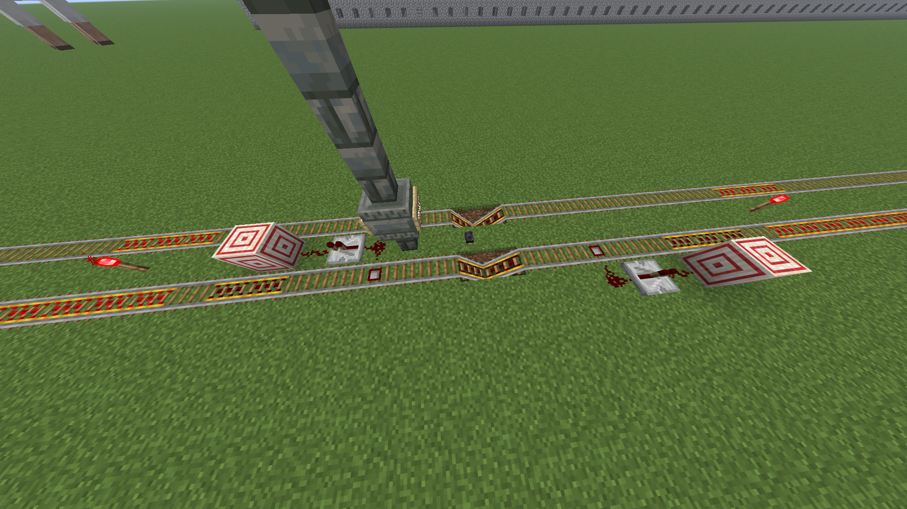

Stations
There are multiple rules you have to follow when you build a station.
Naming
- A station can not have multiple names, and it can not have the same name as an unrelated station;- A good station name is the name of the building or monument or whatever is next to, or featured in the station.
Building
- A station pillar consists of one Tuff Brick Wall, a Chiseled Tuff Brick block on top, with signs on all (at least 3) sides, followed by 2 to 3 more Tuff Brick Walls on top;- The type of sign has not yet been standardized, however Warped Sign is recommended (Birch Sign also looks good);
- The station stop consists of 2 dug up blocks next to each other, next to the station pillar, with 2 powered rails in it, connected by a button (of any kind, but blackstone works best).
Also, consider adding powered rails close to each sides of the station.
 Example of a well-built station
Example of a well-built station
Testing
When building a new station, if adding onto another existing line, you must test it up to the 2 stations next to it in both directions.Station Upgrade
If the line is way too fast, and the station stop is too weak, consider upgrading your station stop by adding this to it: Slime Killing Simulator Station
You can adjust the number of powered rails on the stopper to adjust the strength of it.
Get the upgraded station stop design at 982 1081